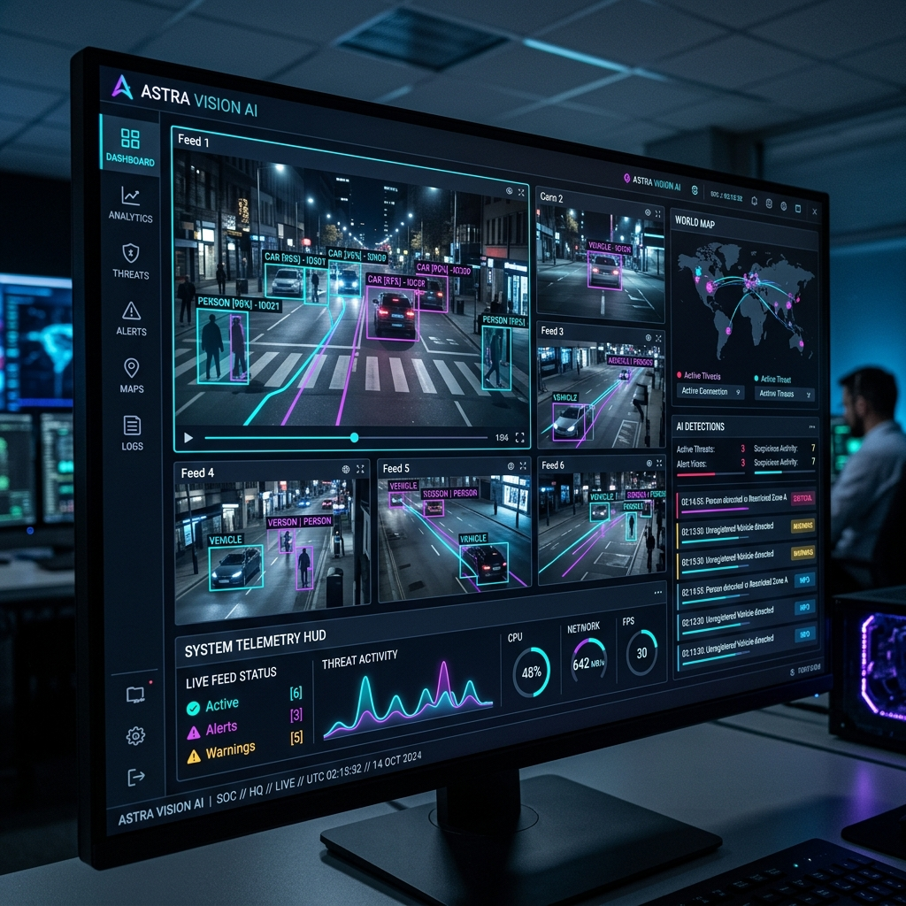

Streamux.ai decodes 64+ multi-camera RTSP video streams concurrently, running sub-millisecond TensorRT vision inference, sub-pixel target correlation, and live WebSocket telemetry.

From edge devices to cloud clusters, Streamux.ai powers end-to-end multi-camera perception and real-time threat telemetry.
Zero-copy hardware decoding for H.264/H.265/AV1 RTSP video streams utilizing NVDEC and DeepStream plugins.
Automated conversion and execution of YOLO11, Vision Transformers, and keypoint models in optimized FP16/INT8 precision.
Adaptive Kalman filtering combined with CSRT correlation tracking for pinpoint micro-radian lead angle computation.
High-frequency telemetry broadcast delivering bounding boxes, threat classifications, and system status over lightweight WebSocket/UDP sockets.
One-command Docker launch optimized for NVIDIA Jetson Orin Nano/AGX, RTX Workstations, and Kubernetes GPU clusters.
Automated scene descriptive notifications with Amazon Bedrock VLM integration and real-time MongoDB time-series storage.
Experience real-time sub-pixel tracking and HUD log streaming in action below.
Designed with zero-overhead C++ GStreamer probes, TensorRT execution graphs, and asynchronous WebSocket telemetry dispatchers.
Zero-copy memory pipelines with hardware demuxing across 64+ RTSP camera streams.
FP16 / INT8 quantized model execution graph with dynamic shape auto-tuning.
Sub-pixel centroid offset calculation with scale-adaptive visual reference templates.
Low-latency telemetry streaming to modern web dashboards and lead-angle fire controllers.